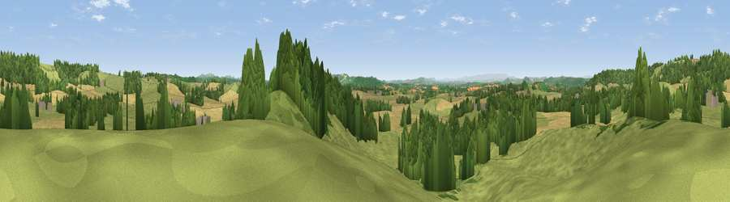

Viewpoint near Felton
#17337 in England · top 47% of its area beats it · near FeltonWhere it is
The exact computed spot (SO 59275 49475). Click the marker for map links.
The view, rendered

A 360° render of this exact spot computed from the terrain model, tree cover and land cover — summer colours, afternoon light, calibrated against photographs of famous viewpoints. Real trees, hedges and buildings will differ in detail.
The panorama
Grey silhouette: terrain skyline in each direction (720 bearings, Earth curvature and refraction included). Dashed green: skyline with trees (+15 m) and buildings (+8 m) as obstacles. Blue strip: how far the ground is visible on each bearing.
Where the view opens
Wedge length = distance to the farthest visible ground on that bearing (vegetation-aware). Rings at 10, 25 and 50 km.
What fills the view
48% grassland · 26% woodland · 25% cropland ·
Angular shares of the visible panorama (visual magnitude), not map area. Landscape diversity 0.47 (0–1 Shannon).
Key numbers
More beautiful places nearby
The staircase of upgrades: each row has a higher view potential than everything closer. Driving times are estimates from straight-line distance, calibrated against real road routing — check an actual route before setting out.
| Place | Direction | Drive | Score |
|---|---|---|---|
| Viewpoint near Little Cowarne | N · 1 km | ~4 min | 69.6 |
| Viewpoint near Pencombe | NNW · 5 km | ~11 min | 72.8 |
| Viewpoint near Dormington | S · 11 km | ~20 min | 73.0 |
| Seagar Hill | SSE · 11 km | ~20 min | 82.1 |
| North Hill | E · 18 km | ~31 min | 86.8 |
| Worcestershire Beacon | ESE · 18 km | ~31 min | 87.1 |
| Viewpoint near West Quantoxhead | SSW · 117 km | ~141 min | 87.9 |
| Viewpoint near West Quantoxhead | SSW · 118 km | ~142 min | 88.7 |
52.14206, -2.59651 · source: screening · position refined by local search. Computed location — check access rights before visiting.